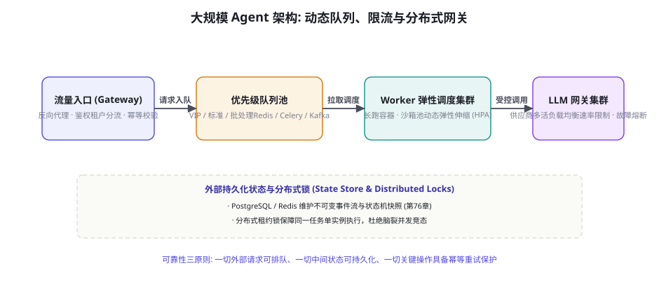
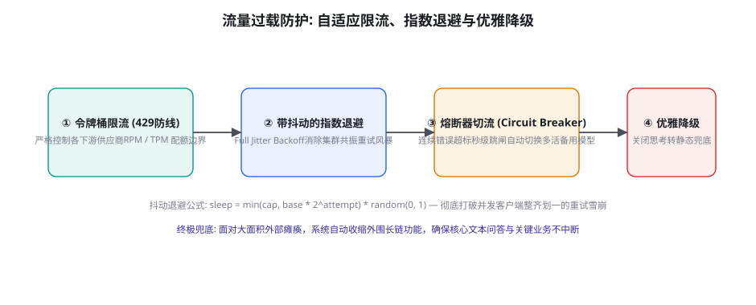

<!DOCTYPE html>
<html lang="zh-CN">
<head>
<meta charset="UTF-8">
<meta name="viewport" content="width=device-width, initial-scale=1.0">
<title>第 80 章 · Agent 系统规模化：队列、并发与可靠性 — AI Agent Cookbook</title>
<link rel="stylesheet" href="../assets/css/style.css">
</head>
<body>
<div id="progress"></div>

<aside class="sidebar">
  <div class="sidebar-head">
    <a class="logo-row" href="../index.html">
      <span class="logo-mark">AC</span>
      <span class="t">AI Agent Cookbook<span class="s">从入门到精通的智能体全景手册</span></span>
    </a>
    <div class="search-wrap">
      <span class="icon">🔍</span>
      <input id="searchInput" type="text" placeholder="搜索全书…" autocomplete="off">
      <kbd>/</kbd>
      <div id="searchResults" class="search-results"></div>
    </div>
  </div>
  <div class="toc-part"><div class="toc-part-head"><span class="num">0</span>导论<span class="chev">▶</span></div><div class="toc-part-body"><a href="chapters/ch001.html"><span class="cn">001</span>前言：为什么是 Agent，为什么是现在</a><a href="chapters/ch002.html"><span class="cn">002</span>如何使用本书：三条学习路径与阅读指南</a><a href="chapters/ch003.html"><span class="cn">003</span>Agent 通识：定义、心智模型与七十年简史</a></div></div><div class="toc-part"><div class="toc-part-head"><span class="num">1</span>基础篇：LLM 与提示工程<span class="chev">▶</span></div><div class="toc-part-body"><a href="chapters/ch004.html"><span class="cn">004</span>LLM 工作原理速成：Transformer 与注意力机制</a><a href="chapters/ch005.html"><span class="cn">005</span>Token、上下文窗口与采样策略</a><a href="chapters/ch006.html"><span class="cn">006</span>Prompt Engineering 系统指南</a><a href="chapters/ch007.html"><span class="cn">007</span>提示工程进阶：提示链、自洽性与元提示</a><a href="chapters/ch008.html"><span class="cn">008</span>结构化输出：JSON Mode、Schema 与受约束解码</a><a href="chapters/ch009.html"><span class="cn">009</span>LLM 的能力边界：幻觉、知识与推理局限</a><a href="chapters/ch010.html"><span class="cn">010</span>Embedding 与向量空间基础</a><a href="chapters/ch011.html"><span class="cn">011</span>开发环境与 SDK 速览：OpenAI / Anthropic / 开源模型</a><a href="chapters/ch012.html"><span class="cn">012</span>API 工程实践：重试、限流、成本与流式</a><a href="chapters/ch013.html"><span class="cn">013</span>评测思维入门：科学地度量 LLM 输出</a></div></div><div class="toc-part"><div class="toc-part-head"><span class="num">2</span>核心机制篇<span class="chev">▶</span></div><div class="toc-part-body"><a href="chapters/ch014.html"><span class="cn">014</span>什么是 Agent：自主性光谱与感知-决策-行动</a><a href="chapters/ch015.html"><span class="cn">015</span>Agent Loop：大模型 Agent 的心脏</a><a href="chapters/ch016.html"><span class="cn">016</span>ReAct：推理与行动的交织范式</a><a href="chapters/ch017.html"><span class="cn">017</span>工具调用全景：从 Function Calling 到并行编排</a><a href="chapters/ch018.html"><span class="cn">018</span>规划机制：任务分解、Plan-and-Execute 与树搜索</a><a href="chapters/ch019.html"><span class="cn">019</span>记忆系统：短期、长期、情景与语义</a><a href="chapters/ch020.html"><span class="cn">020</span>RAG 从入门到进阶：分块、索引、检索与重排</a><a href="chapters/ch021.html"><span class="cn">021</span>RAG 进阶：HyDE、Self-RAG、GraphRAG 与 Agentic RAG</a><a href="chapters/ch022.html"><span class="cn">022</span>反思与自我改进：Reflexion、Self-Refine 与 Critic 模式</a><a href="chapters/ch023.html"><span class="cn">023</span>上下文工程：Context Engineering 的艺术</a><a href="chapters/ch024.html"><span class="cn">024</span>多 Agent 系统：拓扑、协作协议与角色分工</a><a href="chapters/ch025.html"><span class="cn">025</span>人机协同：审批、中断与恢复</a></div></div><div class="toc-part"><div class="toc-part-head"><span class="num">3</span>工程与框架篇<span class="chev">▶</span></div><div class="toc-part-body"><a href="chapters/ch026.html"><span class="cn">026</span>Agent 技术栈总览与选型决策树</a><a href="chapters/ch027.html"><span class="cn">027</span>从零手写最小 Agent：200 行 Python 的完整实现</a><a href="chapters/ch028.html"><span class="cn">028</span>LangChain 与 LangGraph 深度实战</a><a href="chapters/ch029.html"><span class="cn">029</span>OpenAI Agents SDK 与 Responses API</a><a href="chapters/ch030.html"><span class="cn">030</span>Claude Agent SDK 与 Claude Code 剖析</a><a href="chapters/ch031.html"><span class="cn">031</span>AutoGen / AG2：群聊式多智能体框架</a><a href="chapters/ch032.html"><span class="cn">032</span>CrewAI：角色驱动的多 Agent 团队</a><a href="chapters/ch033.html"><span class="cn">033</span>MetaGPT：软件公司隐喻与 SOP 多智能体</a><a href="chapters/ch034.html"><span class="cn">034</span>LlamaIndex：数据框架与 Agent 融合</a><a href="chapters/ch035.html"><span class="cn">035</span>低代码平台：Dify、Coze、n8n 与 Flowise</a><a href="chapters/ch036.html"><span class="cn">036</span>MCP：Model Context Protocol 详解与生态</a><a href="chapters/ch037.html"><span class="cn">037</span>Agent 互操作协议：A2A、AG-UI 与开放生态</a></div></div><div class="toc-part"><div class="toc-part-head"><span class="num">4</span>训练与强化篇<span class="chev">▶</span></div><div class="toc-part-body"><a href="chapters/ch038.html"><span class="cn">038</span>训练全景图：预训练 → SFT → RLHF → Agent 训练</a><a href="chapters/ch039.html"><span class="cn">039</span>SFT 指令微调实操：数据构建与 LoRA/QLoRA</a><a href="chapters/ch040.html"><span class="cn">040</span>RLHF 与 PPO：三阶段详解</a><a href="chapters/ch041.html"><span class="cn">041</span>DPO 及变体：IPO、KTO、SimPO、ORPO</a><a href="chapters/ch042.html"><span class="cn">042</span>RLAIF、Constitutional AI 与自我奖励</a><a href="chapters/ch043.html"><span class="cn">043</span>RLVR：可验证奖励的强化学习与推理范式</a><a href="chapters/ch044.html"><span class="cn">044</span>工具使用训练：Toolformer、Gorilla 与 ToolRL</a><a href="chapters/ch045.html"><span class="cn">045</span>Agent RL：WebRL、AgentGym、AgentTuning 与进化式训练</a><a href="chapters/ch046.html"><span class="cn">046</span>过程奖励与结果奖励：PRM、ORM 与奖励设计</a><a href="chapters/ch047.html"><span class="cn">047</span>合成数据工程：Self-Instruct、Evol-Instruct 与数据飞轮</a><a href="chapters/ch048.html"><span class="cn">048</span>蒸馏与小型化：让小模型拥有 Agentic 能力</a><a href="chapters/ch049.html"><span class="cn">049</span>Self-Play 与持续学习：Agent 的自我进化</a></div></div><div class="toc-part"><div class="toc-part-head"><span class="num">5</span>评测基准篇<span class="chev">▶</span></div><div class="toc-part-body"><a href="chapters/ch050.html"><span class="cn">050</span>Agent 评测方法论：静态到动态、过程到结果</a><a href="chapters/ch051.html"><span class="cn">051</span>代码 Agent 基准：SWE-bench 家族与 LiveCodeBench</a><a href="chapters/ch052.html"><span class="cn">052</span>Web 与 Computer-Use 基准：WebArena、OSWorld、Mind2Web</a><a href="chapters/ch053.html"><span class="cn">053</span>通用 Agent 基准：GAIA、AgentBench、τ-bench 与 BrowseComp</a><a href="chapters/ch054.html"><span class="cn">054</span>工具调用评测：BFCL、ToolSandbox 与 StableToolBench</a><a href="chapters/ch055.html"><span class="cn">055</span>安全评测：注入攻击基准与自动化红队</a><a href="chapters/ch056.html"><span class="cn">056</span>构建你自己的评测：沙箱、容器化与 CI 集成</a><a href="chapters/ch057.html"><span class="cn">057</span>LLM-as-Judge 与评测的可信度</a></div></div><div class="toc-part"><div class="toc-part-head"><span class="num">6</span>安全与对齐篇<span class="chev">▶</span></div><div class="toc-part-body"><a href="chapters/ch058.html"><span class="cn">058</span>Agent 威胁模型：攻击面全景</a><a href="chapters/ch059.html"><span class="cn">059</span>Prompt Injection 攻防：直接注入、间接注入与防线</a><a href="chapters/ch060.html"><span class="cn">060</span>权限与沙箱：最小权限、能力模型与执行隔离</a><a href="chapters/ch061.html"><span class="cn">061</span>数据外泄与供应链安全</a><a href="chapters/ch062.html"><span class="cn">062</span>越狱与滥用防治</a><a href="chapters/ch063.html"><span class="cn">063</span>幻觉治理与事实性工程</a><a href="chapters/ch064.html"><span class="cn">064</span>对齐与价值观：从 RLHF 到宪政 AI 的落地</a><a href="chapters/ch065.html"><span class="cn">065</span>治理、合规与责任：AI Act 时代的 Agent 运营</a></div></div><div class="toc-part"><div class="toc-part-head"><span class="num">7</span>多模态与具身篇<span class="chev">▶</span></div><div class="toc-part-body"><a href="chapters/ch066.html"><span class="cn">066</span>视觉语言模型与多模态 Agent 基础</a><a href="chapters/ch067.html"><span class="cn">067</span>GUI Agent：从 WebVoyager 到 Computer Use</a><a href="chapters/ch068.html"><span class="cn">068</span>移动与操作系统 Agent：AppAgent 与 OS-Copilot</a><a href="chapters/ch069.html"><span class="cn">069</span>具身智能导览：RT-2、PaLM-E 与 VLA 模型</a><a href="chapters/ch070.html"><span class="cn">070</span>游戏与仿真 Agent：MineDojo、Voyager 与 Genie</a><a href="chapters/ch071.html"><span class="cn">071</span>科学发现 Agent：Coscientist、ChemCrow 与 AI Scientist</a><a href="chapters/ch072.html"><span class="cn">072</span>语音 Agent 与实时多模态交互</a></div></div><div class="toc-part"><div class="toc-part-head"><span class="num">8</span>前沿专题篇<span class="chev">▶</span></div><div class="toc-part-body"><a href="chapters/ch073.html"><span class="cn">073</span>Deep Research：深度研究 Agent 架构解密</a><a href="chapters/ch074.html"><span class="cn">074</span>Coding Agent：从 Copilot 到 Devin 再到 Claude Code</a><a href="chapters/ch075.html"><span class="cn">075</span>Computer Use 与 Browser Use 前沿</a><a href="chapters/ch076.html"><span class="cn">076</span>长时程 Agent：小时级任务、压缩与 Checkpointing</a><a href="chapters/ch077.html"><span class="cn">077</span>World Models：Agent 的世界理解与想象</a><a href="chapters/ch078.html"><span class="cn">078</span>Agent 经济学：成本、延迟与质量的权衡</a><a href="chapters/ch079.html"><span class="cn">079</span>可观测性：Tracing、Eval 与监控</a><a href="chapters/ch080.html"><span class="cn">080</span>Agent 系统规模化：队列、并发与可靠性</a></div></div><div class="toc-part"><div class="toc-part-head"><span class="num">9</span>实战项目篇<span class="chev">▶</span></div><div class="toc-part-body"><a href="chapters/ch081.html"><span class="cn">081</span>项目 1：个人知识库问答 Agent（RAG 全流程）</a><a href="chapters/ch082.html"><span class="cn">082</span>项目 2：自动化数据分析师 Agent</a><a href="chapters/ch083.html"><span class="cn">083</span>项目 3：复刻 Deep Research 研究助手</a><a href="chapters/ch084.html"><span class="cn">084</span>项目 4：浏览器自动化 Agent</a><a href="chapters/ch085.html"><span class="cn">085</span>项目 5：代码审查与修复 Agent</a><a href="chapters/ch086.html"><span class="cn">086</span>项目 6：多 Agent 内容工厂</a><a href="chapters/ch087.html"><span class="cn">087</span>项目 7：客服工单 Agent（含人工升级）</a><a href="chapters/ch088.html"><span class="cn">088</span>项目 8：本地化 Agent（Ollama + 端侧模型）</a><a href="chapters/ch089.html"><span class="cn">089</span>生产化：部署、网关、缓存与成本控制</a><a href="chapters/ch090.html"><span class="cn">090</span>案例研究：Devin、Manus、Claude Code 与 Cursor 拆解</a></div></div><div class="toc-part"><div class="toc-part-head"><span class="num">10</span>理论基础篇<span class="chev">▶</span></div><div class="toc-part-body"><a href="chapters/ch091.html"><span class="cn">091</span>形式化基础：MDP、POMDP 与 Agent 数学语言</a><a href="chapters/ch092.html"><span class="cn">092</span>LLM 作为策略：In-context RL 与序列建模视角</a><a href="chapters/ch093.html"><span class="cn">093</span>搜索算法：从 BFS/A* 到 MCTS 与 LLM 结合</a><a href="chapters/ch094.html"><span class="cn">094</span>规划理论：经典规划、HTN 与 LLM+P</a><a href="chapters/ch095.html"><span class="cn">095</span>经典 Agent 理论：BDI、Soar、ACT-R 的遗产</a><a href="chapters/ch096.html"><span class="cn">096</span>概率与决策：贝叶斯视角与多臂老虎机</a><a href="chapters/ch097.html"><span class="cn">097</span>世界模型与生成式仿真</a><a href="chapters/ch098.html"><span class="cn">098</span>涌现、Scaling Laws 与 Agent 的未来能力</a></div></div><div class="toc-part"><div class="toc-part-head"><span class="num">11</span>论文库篇<span class="chev">▶</span></div><div class="toc-part-body"><a href="chapters/ch099.html"><span class="cn">099</span>论文阅读方法论：如何高效读 Agent 论文</a><a href="chapters/ch100.html"><span class="cn">100</span>奠基论文精读十篇</a><a href="chapters/ch101.html"><span class="cn">101</span>核心机制论文地图：记忆、RAG、规划与多智能体</a><a href="chapters/ch102.html"><span class="cn">102</span>训练与强化论文地图</a><a href="chapters/ch103.html"><span class="cn">103</span>评测与安全论文地图</a><a href="chapters/ch104.html"><span class="cn">104</span>2024-2026 前沿论文追踪清单（100 篇）</a></div></div><div class="toc-part"><div class="toc-part-head"><span class="num">12</span>项目与资源库篇<span class="chev">▶</span></div><div class="toc-part-body"><a href="chapters/ch105.html"><span class="cn">105</span>开源框架横评与选型决策树</a><a href="chapters/ch106.html"><span class="cn">106</span>50 个值得 Star 的开源 Agent 项目</a><a href="chapters/ch107.html"><span class="cn">107</span>数据集与基准资源大全</a><a href="chapters/ch108.html"><span class="cn">108</span>学习资源：课程、书籍、博客与社区</a><a href="chapters/ch109.html"><span class="cn">109</span>从本书到 GitHub：贡献指南与扩展路线</a></div></div><div class="toc-part"><div class="toc-part-head"><span class="num">13</span>面试与速查篇<span class="chev">▶</span></div><div class="toc-part-body"><a href="chapters/ch110.html"><span class="cn">110</span>Agent 工程师面试题库：基础 50 题精解</a><a href="chapters/ch111.html"><span class="cn">111</span>Agent 工程师面试题库：进阶 50 题精解</a><a href="chapters/ch112.html"><span class="cn">112</span>系统设计面试：设计 Deep Research / Coding Agent</a><a href="chapters/ch113.html"><span class="cn">113</span>术语表：300 条 Agent 核心术语速查</a></div></div>
  <div class="sidebar-foot">
    <span>v1.0 · 开源书籍</span>
    <button class="theme-toggle">🌙 深色</button>
  </div>
</aside>
<div class="scrim"></div>

<div class="topbar">
  <button class="menu-btn">☰</button>
  <span class="title">AI Agent Cookbook</span>
</div>

<main class="main">
  <div class="content">

    <nav class="crumb">
      <a href="../index.html">首页</a><span class="sep">/</span>
      <a href="../index.html#part-8">第八部分 · 前沿篇</a><span class="sep">/</span>
      <span>第 80 章</span>
    </nav>

    <header class="chapter-header">
      <div class="chapter-meta">
        <span class="badge lv-高级">高级</span>
        <span class="badge tag">前沿</span>
        <span class="badge tag">规模化</span>
        <span class="badge tag">系统架构</span>
        <span class="badge">⏱ 约 45 分钟</span>
      </div>
      <h1>Agent 系统规模化：队列、并发与可靠性</h1>
      <p class="lead">前沿篇的压轴收官章：当智能体从单任务原型跃升为支撑千万级企业吞吐的分布式生产系统。如果说前面章节解决了「如何让智能体做对事」，本章则解决「如何让成千上万个智能体同时稳定做对事」。高并发智能体系统面临着迥异于传统 Web 后端的全新物理约束：长时间持有连接导致的连接池枯竭、模型供应商极度严格的 RPM/TPM 速率限制、重试风暴引发的级联雪崩、以及多租户资源争抢。本章将系统解密异步任务队列解耦、带抖动的指数退避重试算法、供应商多活负载均衡与自适应熔断降级阶梯——构建永不宕机的企业级智能体底座。</p>
    </header>

    <h2 id="scaling-challenges">规模化维度的三重新物理约束</h2>

    <figure class="figure">
      
      <figcaption><span class="fig-no">图 80-1</span>工业级 Agent 队列、限流与分布式网关分流架构。通过将同步请求解耦为优先级排队、弹性 Worker 执行与智能 LLM 网关，实现海量并发任务的高可用削峰填谷。</figcaption>
    </figure>

    <p>传统的 Web 服务规模化主要围绕「无状态计算、高并发 I/O、数据库读写分离」展开。然而，一旦进入 Agent 时代，后端架构师将遭遇传统微服务从未见过的三大<strong>非对称物理约束</strong>：</p>
    <p><strong>第一重约束：长挂钟执行时间与长连接资源霸占（Long-Holding Connections）。</strong>常规 Web 接口的响应时间在 50ms~200ms 之间，而一个典型的 Agent 任务（如 Deep Research、复杂代码重构或多步工具调用）往往持续运行 30 秒至数十分钟。如果前端仍然采用传统的同步 HTTP 阻塞请求，成千上万个挂起会话会在几秒内打满反向代理（Nginx / Envoy）的连接池与 Worker 线程，引发严重的连接拒绝雪崩。<strong>解耦为「异步提交 + 轮询/流式推送状态机」是规模化的第一法则</strong>。</p>
    <p><strong>第二重约束：外部大模型服务商严格的配额漏斗（Upstream Rate Limits）。</strong>无论你自建的后端集群能够承受多少万 QPS，大模型供应商（如 OpenAI、Anthropic）在企业账号层级均施加了极其苛刻的<strong>速率限制（Rate Limits）</strong>：每分钟请求数限制（RPM, Requests Per Minute）与每分钟 Token 数限制（TPM, Tokens Per Minute）。一旦突发流量并发冲垮配额，上游将直接抛出 <code>HTTP 429 Too Many Requests</code>。如果不加节制地在网关层机械重试，数百个并发实例将在同一个毫秒周期内发起二次冲击，造成无法平息的「重试雪崩风暴」。</p>
    <p><strong>第三重约束：非确定性消耗与长尾任务长耗（Unbounded Variance）。</strong>在传统接口中，输入一个参数，其执行耗时与计算开销高度可预测；而在智能体系统中，即使输入完全相同的提示词，由于大模型非确定性采样的存在，某个任务可能在第 2 步成功收敛，另一个任务却可能在深水区发散递归了 20 步。这种巨大的单任务开销方差，使得传统的基于 CPU/内存利用率的自动伸缩机制（HPA）完全失灵，必须引入基于队列深度与 Token 速率感知的专用弹性伸缩指标。</p>

    <h2 id="queue-architecture">异步任务队列：削峰填谷与状态外存</h2>
    <p>为了降服上述非对称约束，企业级 Agent 架构必须彻底放弃同步调用模型，全面倒向<strong>基于优先级队列的异步执行架构</strong>：</p>
    <div class="tbl-wrap">
      <table>
        <thead><tr><th>核心组件</th><th>技术选型建议</th><th>在 Agent 架构中的核心职责</th><th>高并发设计要点</th></tr></thead>
        <tbody>
          <tr><td><strong>API 网关入口</strong></td><td>Envoy / Kong / FastAPI</td><td>鉴权验证、配额检查、快速生成 <code>task_id</code> 并即刻返回 HTTP 202 Accepted</td><td>异步非阻塞响应，建立请求级幂等排重检查</td></tr>
          <tr><td><strong>优先级任务队列</strong></td><td>Redis Streams / RabbitMQ / Kafka / Celery</td><td>对高价值 VIP 任务、标准业务流量与夜间离线批处理进行多级分流排队</td><td>支持按租户隔离的公平排队（Fair Queuing），防止单一客户霸占通道</td></tr>
          <tr><td><strong>执行 Worker 集群</strong></td><td>K8s 容器集群 + 动态轻量 VM</td><td>从队列拉取任务，装载第 76 章所述的断点快照，执行具体的 Agent 自回归循环</td><td>基于队列积压深度（Queue Lag）与外部 Token 消耗速率实现秒级弹性伸缩</td></tr>
          <tr><td><strong>全局持久化状态库</strong></td><td>PostgreSQL + Redis (分布式锁)</td><td>存储不可变事件日志、检查点快照与外部幂等账本（第 65/76 章）</td><td>读写分离，严密配置分布式租约锁，杜绝多机接力引发的双活脑裂</td></tr>
        </tbody>
      </table>
      <caption>表 80-1 · 工业级异步 Agent 系统的核心组件与高并发职责矩阵。</caption>
    </div>

    <p><strong>公平调度与防饿死算法（Deficit Weighted Round Robin）：</strong>在多租户平台中，最常见的事故是某个大型企业客户突然批量提交了 5000 个复杂的深度研究任务，导致消息队列瞬间被填满。如果不加干预，其他中小客户的单步简单查询将被阻塞数小时，引发严重的 SLA 违约。生产级队列调度器必须实现<strong>赤字加权轮询（DWRR）或基于租户的令牌桶分桶调度</strong>：每个租户拥有独立的排队队列与动态消费权重，调度器每次循环从各租户队列中交替拉取定额任务派发至 Worker，确保任何单一租户的突发洪水流量只能在其专属的配额限流区内积压，绝不污染全局吞吐公平性。</p>

    <h2 id="backpressure">背压控制（Backpressure）与端到端响应式流控</h2>
    <p>当系统面对短时间内的突发潮汐流量时，仅仅依赖消息队列的缓冲是不够的。如果消费者集群处理能力严重落后于生产者的入队速率，队列的堆积延迟将迅速突破用户容忍极限，最终导致整个系统在积压中崩溃。高可用系统必须实现<strong>端到端背压控制（Reactive Backpressure）</strong>：</p>
    <p><strong>第一机制：队列水位线联动的网关动态拒止（High-Watermark Rejection）。</strong>在任务接入网关层实时监控全局就绪队列的积压总数。设置两级动态阈值：当积压量达到 70% 警告水位时，网关开始对非核心租户实施<strong>概率性早期丢弃（Random Early Detection, RED）</strong>，温和引导调用端降频；当积压突破 90% 危险水位时，网关对所有非 VIP 流量直接快速失败并返回 <code>HTTP 503 Service Unavailable</code>，并在响应头中附带精准的 <code>Retry-After: 30</code>。保护系统不被冲垮，是保障已接单任务高可靠交付的前提。</p>
    <p><strong>第二机制：自适应并发限制（Adaptive Concurrency Limits）。</strong>传统的静态并发数配置（如固定 50 个线程）在智能体系统中极易失效——当上游大模型 API 响应迟缓时，50 个并发就会耗尽所有系统资源。业界领先的实践是引入 Netflix 经典的 <strong>TCP Vegas 延迟梯度算法</strong>：根据请求的往返延迟（RTT）动态调整本地并发窗口。当平均延迟平稳时，逐步增大并发窗口探测最大吞吐；一旦监测到 P90 延迟开始陡峭爬升（表明下游正在排队阻塞），立即指数级收敛本地并发窗口，使系统始终稳定运转在最佳吞吐-延迟拐点上。</p>
    <p><strong>第三机制：流式长连接的背压透传（Stream Backpressure）。</strong>在采用 SSE（Server-Sent Events）或 WebSocket 向前端流式推送智能体思考过程的场景中，如果客户端（如移动端弱网环境）网络吞吐受限，服务器端不断生成的 Token 会迅速撑爆网关的发送缓冲区。底层网络栈必须建立基于 TCP 窗口的流控联动：一旦客户端套接字发送缓冲区满溢，立即向模型推理驱动协程施加暂停反压信号，挂起后续 Token 生成，实现端到端的节奏共振。</p>

    <h2 id="resilience">弹性重试与自适应限流：消除重试风暴</h2>

    <figure class="figure">
      
      <figcaption><span class="fig-no">图 80-2</span>自适应限流、指数退避与熔断降级阶梯。在面临上游服务商 429 报错时，必须通过带随机抖动的指数退避打散请求；当故障大面积蔓延时，通过三级熔断器迅速将流量无损下沉至备用集群或降级兜底。</figcaption>
    </figure>

    <p>当下游模型 API 返回错误或限流时，错误的重试策略比不重试更加致命。构建高韧性容灾体系必须依靠三大数学与系统级防线：</p>
    <p><strong>第一防线：带完全随机抖动的指数退避（Full Jitter Exponential Backoff）。</strong>传统的固定间隔重试或纯指数退避，会导致数百个并发客户端在发生拥塞后，在同一个时间点整齐划一地再次发起并发冲击（形成剧烈的周期性尖峰脉冲，即「重试风暴」）。AWS 架构团队提出的 Full Jitter 算法被公认为消除共振的最佳实践：</p>
    <p>$$\text{sleep\_time} = \text{random}(0, \quad \min(\text{max\_backoff}, \quad \text{base} \times 2^{\text{attempt}}))$$</p>
    <p>通过在指数递增的时间上限内引入全范围均匀随机分布，所有故障并发请求被平滑地离散化抛洒在漫长的时间轴上，上游服务器的负载得以从脉冲尖刺变成平缓的水流，为服务商的配额恢复争取宝贵的缓冲空间。</p>
    <p><strong>第二防线：基于客户端感知的令牌桶限流器（Client-Side Token Bucket）。</strong>绝不要等待大模型服务商返回 429 之后才被动刹车！优秀的 LLM 网关必须在本地维护与供应商完全同步的<strong>双重令牌桶（Dual Token Bucket）</strong>：一桶监控 RPM（请求频次），一桶监控 TPM（Token 速率）。在向网络发出请求之前，先在本地网关尝试扣减令牌。若本地计算发现当前分钟的 Token 预算即将见底，请求直接在本地队列中等待挂起，实现「零 429 报错」的主动流量整形（Traffic Shaping）。</p>
    <p><strong>第三防线：断路器模式与多活故障转移（Circuit Breaker & Multi-Provider Failover）。</strong>当某个主流供应商（如主力商用 API）在滑动时间窗口内的错误率突破硬性阈值（例如 10 秒内连续 50% 请求超时或返回 500 系列服务崩溃），网关底层的断路器必须在毫秒级内瞬间「跳闸」（Tripped to OPEN）。在跳闸状态下，后续所有流量不再盲目打向上游病态服务，而是依据预设的<strong>多活备用矩阵自动平滑切流</strong>：将任务无缝降级路由至备用模型提供商、内部私有化部署的开源集群（如第 48 章所述的 vLLM 蒸馏阵列），或者触发本章所述的静态兜底话术，彻底切断单点供应商故障引发的全站死锁。</p>

    <div class="callout deep">
      <div class="co-title">🔬 幂等性（Idempotency）设计的终极防线：分布式状态锁</div>
      <p>在分布式多 Worker 架构中，长时程任务由于执行超时可能会触发队列消息的再次投递（Message Redelivery）。设想 Worker A 正在执行任务 102 的第 15 步（向外发送一条敏感通知），由于网络轻微卡顿未及时向队列汇报心跳，队列调度器误判 Worker A 已挂掉，于是将任务 102 重新分发给了 Worker B。此时系统面临毁灭性的并发竞态！工业级系统必须通过<strong>带有自动续期的分布式分布式租约锁（Distributed Lease with Heartbeat，基于 Redis Redlock 或 etcd）</strong>锁死执行权：Worker A 在认领任务时必须获取带有 30 秒有效期的全局租约并启动后台协程周期性续租；Worker B 尝试认领时若发现租约仍然有效，必须严格保持静默等待。当且仅当 Worker 物理崩溃超过租约超时期且续租心跳彻底停止后，所有权才允许安全漂移。分布式锁与第 76 章幂等账本的双重咬合，是支撑万级并发 Agent 系统的终极定海神针。</p>
    </div>

    <h2 id="disaster-recovery">多区域容灾与数据多活架构（Multi-Region Active-Active）</h2>
    <p>对于银行、证券、头部电商等关键业务场景，单一数据中心或单一云厂商的可用性承诺远远无法支撑企业连续性要求。Agent 系统的<strong>跨云跨区域多活架构（Multi-Region Active-Active）</strong>必须解决三大核心痛点：</p>
    <p><strong>第一痛点：分布式状态冲突与 CRDT 无冲突复制。</strong>智能体在长时程探索中维护的任务图与里程碑记录，在跨地域多活写入时极易引发并发更新冲突。生产级状态引擎引入<strong>无冲突复制数据类型（CRDTs, Conflict-free Replicated Data Types）</strong>：将任务状态设计为只增集合（G-Set）或单调递增的偏序因果图（Causal Trees）。无论北京集群和法兰克福集群各自如何演化，两个节点在完成异步日志同步后，状态机在数学上保证收敛至完全一致，无需昂贵的跨洋强一致性分布式锁。</p>
    <p><strong>第二痛点：地理感知的模型网关就近调度（Geo-DNS & Anycast Routing）。</strong>全球化业务流量依托 Anycast BGP 路由，自动将用户牵引至网络延迟最短的边缘机房。边缘节点本地挂载就近的模型推理供应商集群与只读向量库副本；当某一主干区域遭遇光缆中断或大规模区域断电时，全局流量编排器（GTM）在 3 秒内完成健康检查剔除，将后续流量秒级漂移至健康区域，而用户仅感知到一次极短暂的自动重连。</p>
    <p><strong>第三痛点：演练常态化与混沌工程注入（Chaos Engineering）。</strong>任何未经验证的容灾预案都是纸上谈兵。高成熟度团队必须在生产环境中常态化运行<strong>混沌猴子（Chaos Monkey）</strong>：随机断开特定模型的 API 访问、人为向网络注入 500ms 随机延迟、杀死部分核心 Worker Pod、模拟 Redis 脑裂。唯有在真实的不可预测破坏中反复锻造出的系统，才配得上支撑万级智能体集群的钢铁底座。</p>

    <h2 id="scaling-code">高可用分布式 Agent 任务调度器核心实现</h2>
    <p>下面给出一段融合了异步队列消费、带抖动退避重试、分布式租约与熔断保护的工业级 Agent 调度核心代码骨架：</p>
    <div class="codeblock">
      <div class="cb-head"><span>工业级分布式 Agent 任务调度与高可用重试引擎（Python）</span><button class="cb-copy">复制</button></div>
      <pre><code>import time, random, math

class ResilientAgentWorker:
    def __init__(self, worker_id: str, queue_client, lock_client, gateway_client):
        self.worker_id = worker_id
        self.queue = queue_client
        self.locks = lock_client
        self.gateway = gateway_client
        self.circuit_open = False # 熔断器状态
        self.fail_streak = 0

    def calculate_jitter_backoff(self, attempt: int, base: float = 1.0, cap: float = 30.0) -> float:
        """第80章核心: AWS Full Jitter 指数退避算法"""
        max_sleep = min(cap, base * math.pow(2, attempt))
        return random.uniform(0, max_sleep)

    def acquire_task_lease(self, task_id: str, ttl_seconds: int = 30) -> bool:
        """获取分布式原子租约锁，防止多 Worker 脑裂执行"""
        return self.locks.acquire_lock(f"lock:agent_task:{task_id}", owner=self.worker_id, ttl=ttl_seconds)

    def execute_with_resilience(self, task_payload: dict, max_retries: int = 4):
        task_id = task_payload["task_id"]
        
        # 1. 竞争分布式租约锁
        if not self.acquire_task_lease(task_id):
            print(f"[{self.worker_id}] 任务 {task_id} 已被其他活跃节点持有，跳过。")
            return

        # 2. 检查熔断器状态
        if self.circuit_open:
            # 熔断开启中: 降级使用备用轻量模型
            print(f"[{self.worker_id}] 触发熔断保护，降级路由至备用模型服务池...")
            return self.fallback_execution(task_payload)

        # 3. 带有 Full Jitter 退避的弹性调用循环
        for attempt in range(max_retries + 1):
            try:
                # 调用模型网关执行单步 Agent 自回归决策
                response = self.gateway.call_model(task_payload)
                
                # 成功恢复: 重置失败计数
                self.fail_streak = 0
                return response
            except Exception as e:
                self.fail_streak += 1
                if self.fail_streak >= 5: # 连续5次物理崩溃，跳闸熔断
                    self.circuit_open = True
                    print(f"[{self.worker_id}] 警告: 错误率超标，熔断器跳闸切流!")

                if attempt == max_retries:
                    # 超过最大重试次数，转入死信队列并落盘断点 (第76章)
                    self.queue.move_to_dead_letter(task_payload, error=str(e))
                    raise RuntimeError(f"任务 {task_id} 在重试 {max_retries} 次后彻底失败: {e}")

                sleep_time = self.calculate_jitter_backoff(attempt)
                print(f"[{self.worker_id}] 遭遇异常: {e}, 执行退避等待 {sleep_time:.2f}s (尝试 {attempt+1}/{max_retries})")
                time.sleep(sleep_time)
            finally:
                # 无论如何释放本地锁
                self.locks.release_lock(f"lock:agent_task:{task_id}", owner=self.worker_id)</code></pre>
    </div>
    <p>上述代码生动呈现了生产级规模化调度器的坚固与周密：它不心存侥幸，时刻准备应对网络风暴与供应商崩溃；它用确定性的数学公式打散并发重试，用分布式锁守护执行唯一性，用熔断降级化解单点失火，构筑起工业级智能体系统的坚固钢铁防线。</p>

    <h2 id="capacity-planning">生产容量规划与压测评估模型（Capacity Planning & Benchmarking）</h2>
    <p>很多团队在智能体系统上线前，完全不知道现有集群究竟能抗住多大并发，盲目采购导致算力严重浪费，或者首日放量即刻被打崩。企业级架构必须建立一套科学的<strong>容量规划与压测评估模型</strong>：</p>
    <p><strong>第一步：基准负载画像测算（Workload Profiling）。</strong>统计线上典型任务的统计特征四元组：① 平均交互步数 $ar{S}$（如 8.5 步）；② 单步平均输入 Token 数 $ar{T}_{	ext{in}}$（如 4200）；③ 单步平均输出 Token 数 $ar{T}_{	ext{out}}$（如 350）；④ 平均单步工具执行耗时 $ar{D}_{	ext{tool}}$（如 240ms）。根据这组参数，即可精准推导出一个目标 QPS 下，整个系统对下游大模型集群的理论 TPM 与 RPM 压力基线：</p>
    <p>$$	ext{TPM}_{	ext{target}} = 	ext{QPS} 	imes ar{S} 	imes (ar{T}_{	ext{in}} + ar{T}_{	ext{out}}) 	imes 60$$</p>
    <p><strong>第二步：非稳态压测与波浪式冲击模拟（Waveform Load Testing）。</strong>传统的阶梯式平稳加压无法测出 Agent 系统的真正极限。压测工具（如 Locust 或 k6）必须配置<strong>「泊松突发流与长尾慢请求混合模型」</strong>：模拟正常高频简单查询的同时，在特定时刻突发注入 50 个需要持续深度搜索达 10 分钟的长任务，重点观察：① 优先级队列是否发生了低优先级对高优先级的反向死锁；② 弹性 Worker 扩容（HPA）的冷启动时延是否在可接受范围内；③ 本地令牌桶能否在瞬间削平脉冲尖峰而零 429 报错。</p>
    <p><strong>第三步：破坏性极限拐点定位（Knee-of-the-Curve Detection）。</strong>持续推高并发压力，直到系统吞吐量（Throughput）不再随并发数增长，同时 P99 延迟呈现垂直断崖式恶化。记录此时的临界并发数作为系统的<strong>「绝对红线容量」（Redline Capacity）</strong>，并将生产网关的动态背压阈值严格锚定在该数值的 70%~75% 水平，留出充足的物理安全冗余。</p>

    <p>补充一个极具指导价值的组织协同法则：<strong>SRE 运维团队与 AI 算法团队的「生产责任交接契约」</strong>。在传统互联网公司中，SRE 只负责基础设施和服务的 99.99% 可用性，算法团队只负责模型的评测准确率。而在智能体时代，这两者的边界被彻底打破——一个「模型输出格式突然从标准 JSON 变为带解释文本的自然语言」的细微行为漂移，会在毫秒级内导致下游成百上千个微服务解析崩溃，触发全网最高级别的 SRE P0 告警。生产级组织架构必须建立跨职能的<strong>「Agent 可靠性联合运营机制」</strong>：① 提示词与模型参数变更与底层代码同权，必须走完整的 Canary 金丝雀灰度与自动化混沌测试流水线；② SRE 平台将模型生成熵、工具解析失败率与语义健康探针（第 79 章）作为一级 SLO 纳入大盘监控；③ 故障排查由系统架构师与智能体工程师同屏协同，真正实现从算力基建到认知语义的端到端工业可靠性合流。</p>

    <h2 id="faq">三个高频疑问</h2>
    <p><strong>Q：在成千上万个并发 Agent 运行的场景下，如何优雅地实施全系统级平滑升级与版本发布，而不杀死正在运行中的长程会话？</strong>必须严格遵循<strong>「滚动发布与排空模式」（Graceful Rolling Draining）</strong>：发布新版 Agent 镜像或提示词配置时，系统切忌直接杀掉旧 Pod！网关调度器向当前旧版本集群下发 <code>DRAIN</code>（排空）信号：旧集群立即停止认领队列中的新任务，仅专职推进当前已经运行中的长程任务；同时，新拉起的全新容器集群开始独享认领所有新进任务。配合第 76 章的状态机 Checkpointing 机制，若有极少数跨越数小时的超长任务无法按期排空，旧 Pod 在生命周期钩子（<code>SIGTERM</code>）中触发一次强制原子存盘，随后由新版 Worker 直接从数据库快照断点接力续跑，达成真正的零停机平滑发布。</p>
    <p><strong>Q：当下游模型供应商彻底全面瘫痪（如某主流 API 发生全球级服务不可用，持续长达 1 小时）时，大规模 Agent 系统应该如何做极限防御？</strong>必须启动三级<strong>终极防御预案（Disaster Recovery Plan）</strong>：① <strong>网关层瞬时熔断并切断入队入口</strong>，对新发起的非核心请求返回明确的降级提示或排队预计等待时长，杜绝数以万计的无效请求塞爆内部存储与消息积压；② <strong>将全部异步长任务原地挂起</strong>（直接触发第 76 章的持久化存盘），释放所有 Worker 容器的计算与网络资源，避免在空跑中大量消耗错误日志；③ <strong>切换至自托管备用算力池（如本地私有化的开源大模型）</strong>，仅保障最高 SLA 等级企业客户的核心只读问答业务正常运转。大面积系统瘫痪是检验架构成色的终极考场——能从容入睡的团队，永远依赖的是深度的系统弹性工程，而不是对外部云厂商的虚幻信仰。</p>
    <p><strong>Q：开源分布式调度框架（如 Ray、Celery、Temporal）在 Agent 规模化落地中究竟该如何抉择？</strong>核心取决于任务的<strong>「状态复杂度与计算特征」</strong>：如果业务主要是短周期的离线批量任务（如百万级数据的离线信息抽取），标准的 <strong>Celery + Redis</strong> 已经足够简单好用且生态极其成熟；如果涉及多模态模型的高性能分布式并行训练与 GPU 显存级流水线调度，<strong>Ray</strong> 是无可替代的王者；但如果是本篇重点探讨的<strong>「长达数小时、包含人类异步审批、需要毫秒级精准断点恢复与严格因果重放」的长时程复杂 Agent</strong>，架构师应当果断选择 <strong>Temporal（或其开源生态）</strong>作为持久化执行底座。它开箱即用的工作流确定性事件溯源与自动重放机制，能帮团队免去数万行自研状态机的痛苦陷阱。</p>

    <div class="callout note">
      <div class="co-title">📘 本章知识网络定位与前沿篇总收束</div>
      <p>本章在全书网络中的连接：作为第八部分前沿篇（73-80 章）的压轴总结，全面承接第 73 章（Deep Research 深度执行）、第 74 章（Coding Agent 敏捷工程）、第 75 章（Computer Use 桌面全自主）、第 76 章（长时程任务断点恢复）、第 77 章（World Models 前瞻推演）、第 78 章（Agent 经济学财务账本）与第 79 章（可观测性链路透视）。全篇八章合观，完成了智能体从<strong>能力跃升（73-77）</strong>到<strong>工程落地（78-80）</strong>的完整闭环。下一部分我们将正式踏入全书最激动人心的实战篇（第九部分，81-90 章）：八大行业级完整端到端项目源码实战、全流程落地生产化与顶级工程案例复盘——将全书所有理论与工程体系，转化为坚不可摧的商业级软件产品！</p>
    </div>

    <section class="refs">
      <h2 id="summary">本章小结</h2>
      <ul>
        <li>规模化三重新物理约束：长挂钟长连接资源霸占、供应商严格的 RPM/TPM 速率漏斗、以及非确定性长尾执行方差。</li>
        <li>异步任务队列（API 网关 + 优先级排队池 + 弹性 Worker 集群 + 状态外存）是工业级削峰填谷与高吞吐的唯一正道。</li>
        <li>采用 AWS Full Jitter 带完全随机抖动的指数退避算法，彻底打破并发客户端的周期性共振重试风暴。</li>
        <li>本地双重令牌桶主动整形流量，配合三级断路器与多活供应商故障转移，杜绝单点服务商故障引发全站瘫痪。</li>
        <li>基于带有心跳自动续期的分布式分布式租约锁，死锁执行权，从数学上杜绝多机接力与消息重发引发的脑裂竞态灾难。</li>
      </ul>
      <h2 id="quiz">自测题</h2>
      <ol>
        <li>为什么在面对上游大模型 API 返回 429 速率限制时，简单的固定间隔重试（如每隔 3 秒重试一次）会导致更严重的系统性灾难？Full Jitter 算法是如何解决这一问题的？</li>
        <li>画出你团队当前系统的请求流转图：它是一个同步阻塞的单体进程，还是一个具备优先级队列与状态外存的异步解耦架构？如果是前者，改造的第一步是什么？</li>
        <li>在多租户智能体 SaaS 平台中，如果某个恶意或非正常的大客户在 10 秒内提交了 10000 个长程任务，系统应通过怎样的调度算法保证其他正常中小客户的请求不会被饿死？</li>
        <li>解释分布式分布式租约锁（Distributed Lease）在长时程任务断点续跑中的必要性：如果没有租约锁，当某个 Worker 发生短暂网络假死后系统会发生什么严重事故？</li>
      </ol>
      <h2 id="refs">参考文献与延伸阅读</h2>
      <ol>
        <li>Brookshire, M. (2015). <span class="paper-title">Exponential Backoff And Jitter</span>. <a href="https://github.com/awslabs/aws-arch-backoff-simulator">github.com/aws-arch-backoff-simulator</a> · <a href="https://aws.amazon.com/blogs/architecture/exponential-backoff-and-jitter/">AWS Architecture Blog</a>（重试算法经典奠基）</li>
        <li>Nygard, M. T. (2018). <span class="paper-title">Release It!: Design and Deploy Production-Ready Software (Circuit Breaker 模式)</span>. Pragmatic Bookshelf.</li>
        <li>Temporal Technologies (2024). <span class="paper-title">Temporal Architecture and Event-Sourcing Workflow Engine</span>. <a href="https://docs.temporal.io">docs.temporal.io</a></li>
        <li>OpenAI (2024). <span class="paper-title">Rate Limits and Error Handling Best Practices</span>. <a href="https://platform.openai.com/docs/guides/rate-limits">platform.openai.com</a></li>
        <li>Kleppmann, M. (2017). <span class="paper-title">Designing Data-Intensive Applications: The Big Ideas Behind Reliable, Scalable, and Maintainable Systems</span>. O'Reilly Media.</li>
        <li>Redis (2024). <span class="paper-title">Distributed Locks with Redis (Redlock Algorithm)</span>. <a href="https://redis.io/docs/manual/patterns/distributed-locks/">redis.io</a></li>
      </ol>
    </section>

    <nav class="chapter-nav"><a class="prev" href="ch079.html"><span class="dir">← 上一章</span><span class="t">可观测性：Tracing、Eval 与监控</span></a><a class="next" href="ch081.html"><span class="dir">下一章 →</span><span class="t">项目 1：个人知识库问答 Agent（RAG 全流程）</span></a></nav>

  </div>
</main>

<aside class="pagemap"></aside>
<div class="scrim-side"></div>
<script src="../assets/js/app.js"></script>
</body>
</html>
